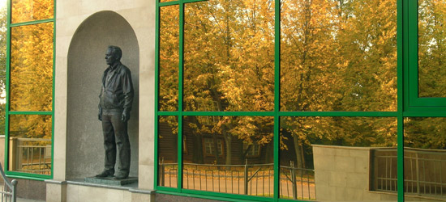
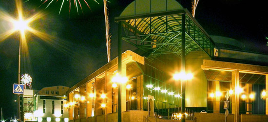
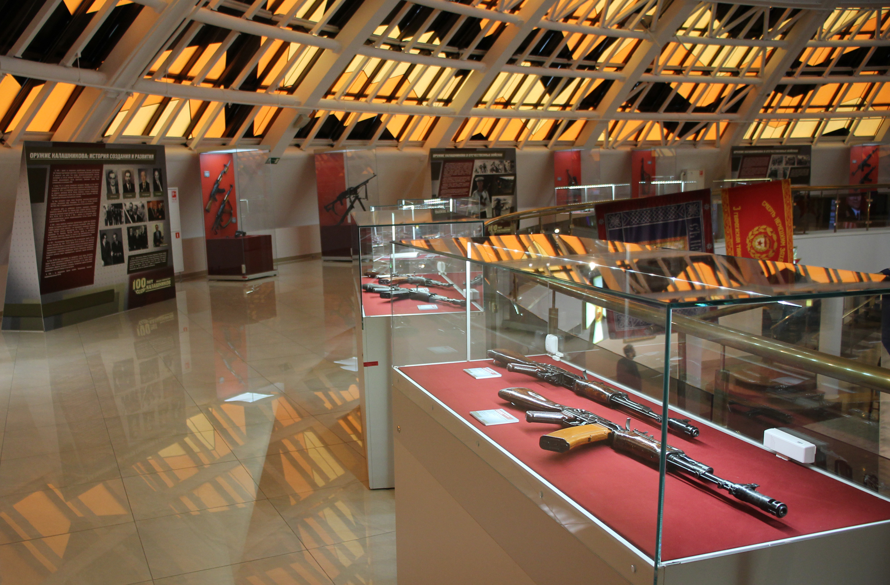
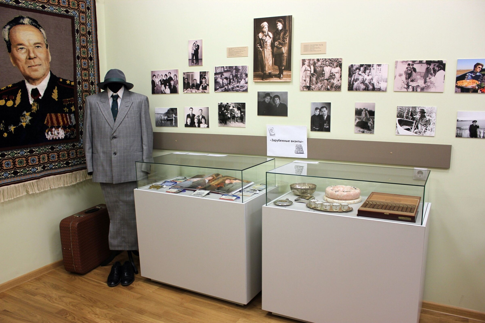
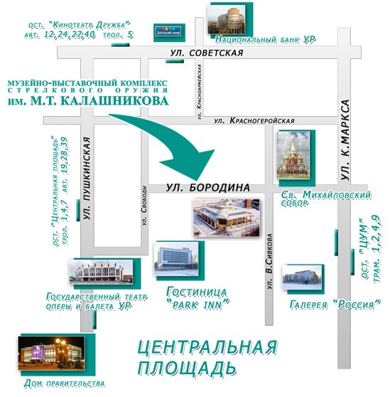

О нашем
музее
Музейно-выставочный комплекс имени Михаила Тимофеевича Калашникова
Музейно-выставочный комплекс стрелкового оружия имени М. Т. Калашникова появился на культурной карте России в 2004 году. Он сразу же стал достопримечательностью столицы Удмуртской Республики — города Ижевска, оружейная история которого насчитывает более двухсот лет.
Музей по праву носит имя Михаила Тимофеевича Калашникова. Именно в Ижевске удачное конструкторское решение АК-47 получило воплощение в массовом производстве. На заводе «Ижмаш» в специальном КБ родились все пять поколений оружия «семейства Калашникова». Михаил Тимофеевич прожил здесь всю дальнейшую жизнь, став почетным гражданином Ижевска и Удмуртской республики. Вместе с Г.Н. Никоновым, Е.Ф. Драгуновым и В.А. Ярыгиным он составляет славную когорту ижевских конструкторов-оружейников.
Основная экспозиция музея представляет отечественную историю, ретроспективу производства и новые разработки стрелкового оружия. Все выставочные залы оснащены мультимедийным оборудованием. В современных демонстрационных залах (огнестрельный, пневматический и лучно-арбалетный тиры) можно выбрать различные образцы исторического и действующего оружия.
Ежегодно МВК принимает более 160 тысяч посетителей. Это дети и взрослые, жители Удмуртии, России, ближнего и дальнего зарубежья, участники крупных международных соревнований, иностранные гости столицы УР.


Что вы можете найти в нашей сувенирной лавке?

Покупка билетов
• «Калашников — это мир» — альбом, уникальное красочное издание
• ««АК-47. Оружие-легенда»
• Иллюстрированные энциклопедические словари
• Книги по истории российского государства
• Книги для любителей охоты
• Журналы: «Калашников», «Сафари», «Воинское братство»
• Путеводители по г. Ижевску и Музейно-выставочному комплексу им. М. Т. Калашникова
• Ручки с символикой музея: пластиковые, металлические, комбинированные, в футлярах и без них, шариковые, роллеры, перьевые.
• Буклеты, открытки и др.
Наведите на картинку что бы увеличить ✋
И на фон что бы уменьшить 👉
Коллекции Музея
Музейно-выставочный комплекс стрелкового оружия имени М. Т. Калашникова был открыт
в ноябре 2004 года.
Основой его собрания стала коллекция, включающая предметы личного фонда Калашникова,
переданные Михаилом Тимофеевичем: фотографии и письменные материалы, личные вещи,
мебель книги, подарки, предметы изобразительного искусства.
Музеем целенаправленно комплектуется коллекция оружия — боевого и спортивно-охотничьего,
российского (в
основном, ижевского) и
зарубежного производства, а также
оружейные принадлежности.
Музейное собрание пополняется материалами об Ижевских оружейниках, работавших в разное
время на предприятиях города: на Ижевском машиностроительном заводе, Ижевском
механическом заводе и Ижевском мотозаводе (о конструкторах, технологах, рабочих разных
специальностей, создавших городу славу оружейной кузницы страны).
Ведётся систематизация музейных предметов, формирование электронной базы данных.
На 01.01.2022 г. музейное собрание составляет 18705 единицы хранения, из них 12141 — предметов
основного фонда, 6564 предметов научно-вспомогательного фонда.



ЧАСЫ РАБОТЫ
Вторник-среда, пятница-воскресенье:
11:00 – 19:00, касса до 18:30.
Четверг: 11:00 – 21:00, касса до 20:30.
Выходной день — понедельник
Санитарный день — первый четверг каждого месяца
В огнестрельном тире и кассе технологический перерыв с 13.30 до 14.00
В сувенирной лавке технологический перерыв с 13.30 до 14.00
НАШ АДРЕС
г. Ижевск, ул. Бородина, 19
priemnaya@kalashnikovmuseum.udmr.ru
museum-mtk@mail.ru
ПРОЕЗД
Tроллейбусы: № 1, 4, 7 остановка «Центральная площадь»
Трамваи: № 1,2,4,9,10 остановки «Свято-Михайловский собор»
Автобусы :№ 19, 26, 28, 39 остановка «Центральная площадь»
2009 - 2022 © Музей Калашникова
2009 - 2011 © Центр Высоких Технологий
ТЕЛЕФОНЫ
ПРИЕМ ЗАЯВОК на экскурсионное обслуживание:
(3412) 51-34-52
Created by Kalachnikov Team